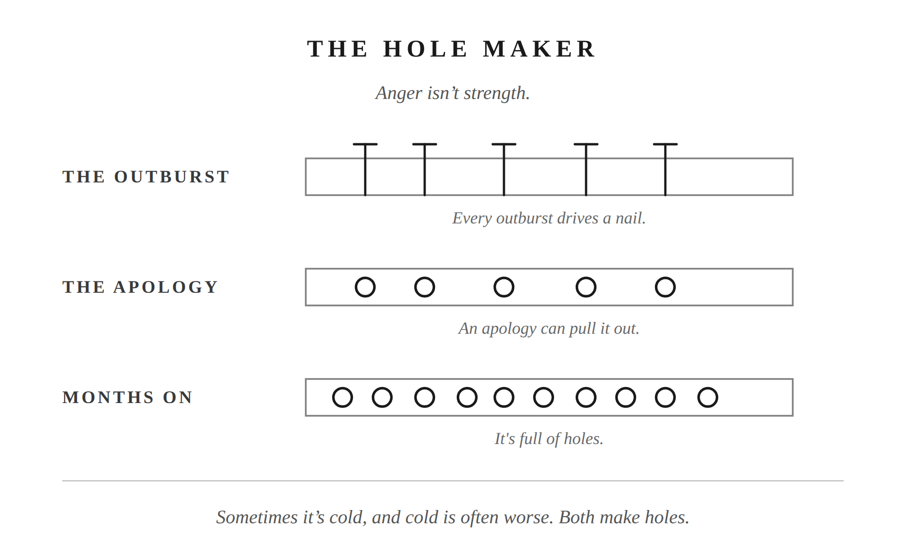

Anger works. That’s the part nobody tells you when they’re explaining why it’s a problem.
The chemicals that fire when someone challenges you. The narrowing of thought that makes you fast and not very careful. That system exists because it worked. Every culture on earth has tried to explain anger and contain it. The Stoics wrote books on it. Researchers have spent decades measuring it. All that attention exists because anger is universal, not because it’s rare.
It showed up in your life this week. Maybe not as a flare. Maybe just the quiet version: the shortened answer, the silence that had something behind it, the cold shoulder that lasted longer than you meant.
The question isn’t whether you get angry. The question is what you do with it.
Researchers have produced more than one theory for why anger evolved, and none of them call it a mistake.
The oldest and most intuitive: anger evolved to defend resources. Territory, food, mates, status. The man who moved quickly to protect what was his had an edge. The system is fast. It narrows your thinking to the immediate threat and generates the intensity needed to back up a claim. It exists because it worked.
A more recent theory goes further. In 2009, Aaron Sell and colleagues at UC Santa Barbara proposed what they call the recalibrational theory. The core finding: anger doesn’t fire only when something is being taken from you. It fires when you detect that another person isn’t weighing your welfare sufficiently. The signal it sends: “You are not accounting for me correctly.” Your face changes, your voice changes, your body shifts. All of it tells someone else what you cost to disregard. (Sell, Tooby, and Cosmides, “Formidability and the Logic of Human Anger,” PNAS, 2009.)
This explains a wider range of triggers than resource defense alone. When you get angry because you feel dismissed, disrespected, or ignored at home, you’re not just protecting territory. You’re running a deeply wired social signal: “You are not treating my interests as real.” The signal is real. The mechanism is real. Whether the tool fits the situation is a different question.
In a marriage, the finite things are real. Your time. Your energy. Your attention. Your standing inside the home. When you’re depleted and another demand arrives, the scarcity is real. When you feel dismissed in front of your children, the cost is real.
Respect is the social contract that acknowledges those things belong to you. Not a feeling. An agreement: your needs count, your interests are worth accounting for. Every long-term relationship has that contract, stated or not. When it feels violated, the anger mechanism fires for the same reason it fires when any finite resource is threatened.
The mechanism is doing its job. That doesn’t mean the job fits the situation.
Anger doesn’t always announce itself.
Sometimes it’s hot: a raised voice, full volume, something said that can’t be retrieved. Sometimes it’s cold, and cold is often worse. Three days of silence. A hardness in the face that won’t break. Withdrawal that punishes without ever naming what it’s punishing for. Both are anger. Both make holes.
The triggers span the same range. On one end: disrespect in front of your children, a major decision made without you. On the other end, it’s smaller. She watched the next episode without you. The house is a mess again. You came home depleted, wanted something acknowledged, and nothing came. Most men dismiss those as “not really anger.” That’s the error. The tone just shortened. You went quiet in a specific way she felt. The mechanism is the same.
Both partners can get angry. Both can escalate. This chapter addresses you because you’re reading it. But when both of you are in the activation state at the same time, it can move to places neither of you chose. Recognizing it in yourself is where your work starts.
The system was built for external threats. A competitor. An actual violation. Something genuinely coming for what’s yours.
When there are no external threats and the system activates anyway, the activation goes somewhere. In a marriage, it goes to the person closest. You reclassify her as the threat the system was designed to handle. Not consciously. Not deliberately. The mechanism doesn’t check the relationship before it responds.
She isn’t the threat.
When you turn off your logic and lash out, the system aims at the nearest target: her. Your body can’t tell the difference between a rival tribe and the woman across the table. The system fires at the signal, not at the actual relationship.
Seneca’s De Ira, his study of anger, described what happens at the moment of activation in three stages. The first is involuntary: “a preparation for passion, as it were, and a sort of menace.” The flush, the narrowing, the physiological response that arrives before any choice. The second stage is a choice: whether you decide the response is justified. The third stage is when reason has already been overtaken. (De Ira, Book II, trans. Basore.)
The gap between the first stage and the second is where everything lives. That’s where your prohairesis lives. Your capacity to choose. The part of you that chooses before you react. Chapter 1 named that gap. Three seconds. This is what those three seconds are for.
Marcus Aurelius wrote it plainly in Meditations: “to be moved by passion is not manly, but that mildness and gentleness, as they are more agreeable to human nature, so also are they more manly; and he who possesses these qualities possesses strength, nerves, and courage, and not the man who is subject to fits of passion and discontent.” (Meditations 11.18, Long trans.) He wasn’t describing an achievement. He was writing to himself, leading an army through a war he didn’t choose, about what actual strength looks like.
Anger isn’t strength. It’s the absence of it.
There’s a parable, origin unknown and widely circulated, about a father who gives his son a box of nails and a hammer. Every time the boy loses his temper, he drives a nail into the fence post. Weeks of nails. Then, as the boy learns to govern himself, the father tells him to pull one nail for every day without an outburst. It takes longer to pull them out than it did to drive them in. Eventually the last nail comes out.
The father takes him to the fence.
It’s full of holes.
“You’ve done well,” the father says. “But look at this fence. It will never be the same. When you lose your temper, you drive a nail. When you pull the nail out, the hole is still there.”
The boy thought he’d fixed it. The fence showed him he hadn’t.
That’s what most men miss. An apology pulls the nail. It doesn’t fill the hole.
Think about a moment, not necessarily dramatic, where you raised your voice once under real pressure. It felt justified. By morning it was over, or close enough that life moved on.
But she noticed. She didn’t say anything. A few months later, something had shifted. Not in what she brought to you. In how she looked at you. A slight adjustment in what she believed you were capable of. No single incident she could point to. Just an updated sense of who she was dealing with.
You didn’t know which nail made which hole. You’d already pulled most of them.
The blur, the accumulated weight of incidents each addressed and moved past, becomes a feeling. Not a list. Just a quiet, settled belief: you can’t be trusted with the hard stuff. That feeling, over time, becomes disdain. Disdain becomes contempt.
Contempt, Gottman found, is the single strongest predictor of divorce: the most reliable signal from all those years watching couples. Not the fights. The slow corrosion of a partner’s sense that the other person is worth full effort anymore. You don’t get there from one bad moment. You get there from hundreds of small ones that were never quite fully repaired.
You don’t know which cigarette gave someone the diagnosis. Nobody does. The learning isn’t forensic. You don’t go back and find the specific one. You understand what the behavior leads to, and you stop.
Stop making holes.
What’s already in the fence is the work of the chapter on repair. This chapter’s job is simpler: name the gap. Know what it’s for.
You feel the activation. The spike, the narrowing, the pull. You’re not pretending it isn’t happening. Seneca knew the first motion can’t be stopped. You’re not trying to stop it.
You’re trying to govern what happens next.
That’s what leadership looks like from the inside.

Putting into Practice
Mechanism: The Hole Maker
Conversation sentence: Anger isn’t strength. Every outburst drives a nail you’ll never fully pull out.
Anger is an evolutionary signal misfiring at the person closest. Each outburst leaves permanent damage that apologies can pull at but never fully undo, and the accumulated holes become contempt over time. Seneca named the gap between the first involuntary surge and the second stage, when the choice to escalate is still available. That gap is where the Stoic husband governs, not by stopping the activation, but by refusing to let the second stage run.
Lesson: Seneca split anger into stages: an involuntary jolt you can’t stop, then a second stage that’s a real choice. Self-command was never about not feeling the jolt. It’s about what you do with the stage after it.
Challenge: Anger doesn’t feel like weakness while it’s happening. It feels like finally being heard, or finally being taken seriously. She’s the one left recalibrating what she thinks you can handle, one outburst at a time.